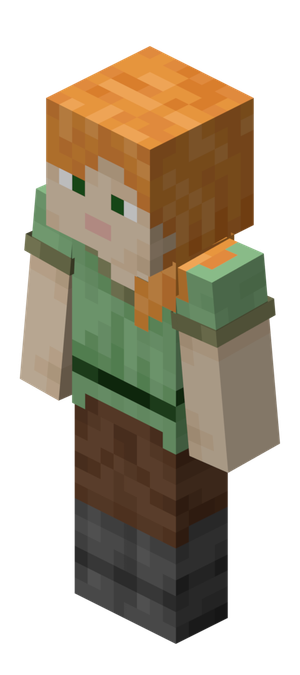

|
Алекс |
Алекс — один из двух бесплатных скинов по умолчанию в Minecraft, добавленный 22 августа 2014 года, представляющий персонажа с более тонкими руками, рыжим хвостиком и зелеными глазами. Она олицетворяет женский образ (хотя геймплейно идентична Стиву) и способствует разнообразию персонажей.

Алекс обычно изображают с тонкими руками и бледной светлой кожей. У него длинные, ярко-оранжевые волосы, собранные в конский хвост и свисающие на левое плечо, белые глаза, зеленые зрачки и розовые губы. Его туника — теплого, светло-зеленого цвета, с манжетами цвета мха, черным поясом, коричневыми брюками с подкладкой и серыми сапогами.